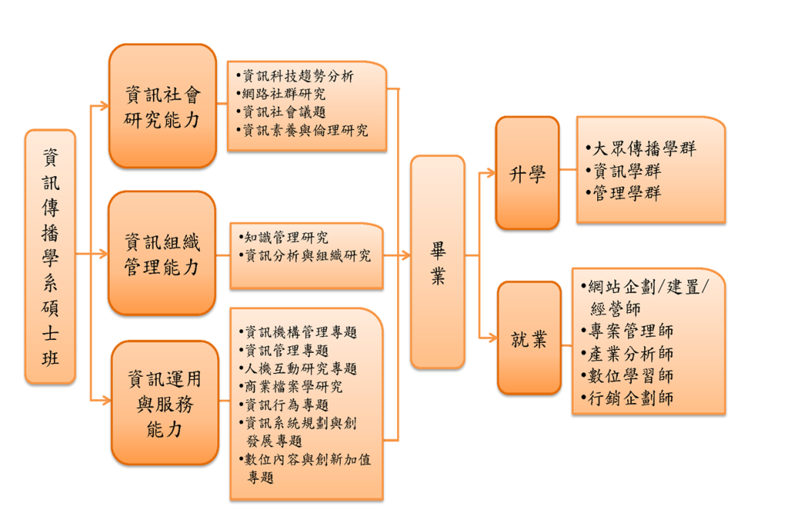

培養獨立思考與基礎研究能力
具備對資訊社會、知識組織管理與資訊運用服務研究的理論基礎
培養對資訊分析與訊息傳播能力
資訊社會研究能力旨在面向鉅觀社會結構與微觀的行動者，思考兩者匯聚於資訊使用過程所產生的現象與問題，進而從中培養反思能力。
資訊組織管理研究能力是擬培養同學對豐富的資訊內容，能達成有效的組織建構，提供方便的使用介面及存取服務，進而擅於資訊系統管理；並能發揮群組合作的效益。
資訊運用與服務能力旨在培育學生深度及廣度瞭解資訊資源與服務意涵，掌握資訊服務產業沿革、現況、與趨勢，以及資訊資源和資訊傳播連動關係，可以獨立研究及適切表達資訊傳播相關議題。
了解研究相關資訊的傳播過程，包括：研究相關資訊的分布情形、流通情形、利用情形及生產情形。 熟悉量化研究設計原理及掌握量化研究處理方法與步驟。 熟悉量化資料分析方法、圖表製作展現方式與報告撰寫技巧。 了解質研究方法的理論基礎及實施步驟，習得質性研究的資料蒐集、分析及撰寫等技巧。
掌握資訊傳播相關理論，包括資訊社會、網絡社會、知識與權力等。
【研究方法】
【理論基礎】
